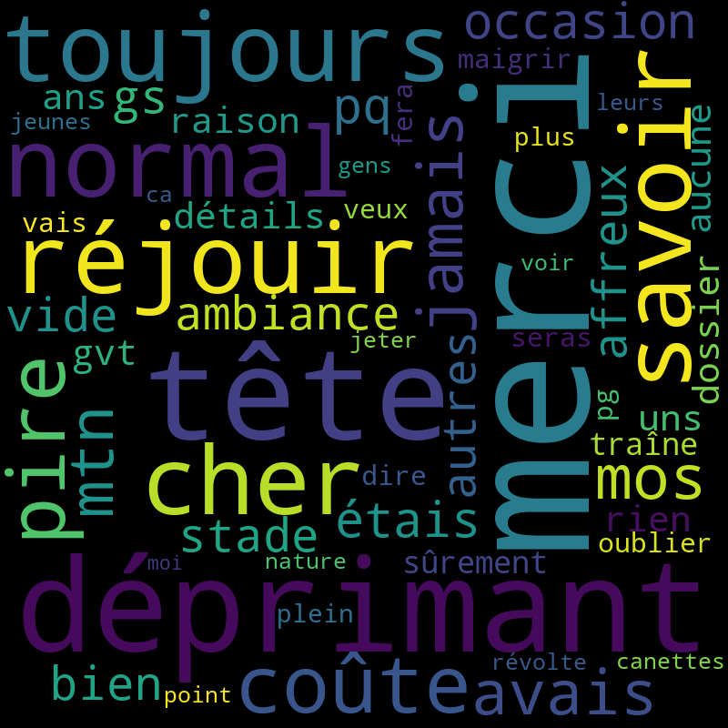

Tweets Keywords Visualization
Mot clé :
que
Nombre de tweets à récupérer :
20
Date/heure lancement du script :
2019-05-29 01:16:35.955801

Auteur
Tweet
Date et heure
hgs
J'ai pris deux sérums et une boîte d'aloe vera (92%, ça faisait longtemps que je voulais la tester)
Tue May 28 23:16:33 +0000 2019